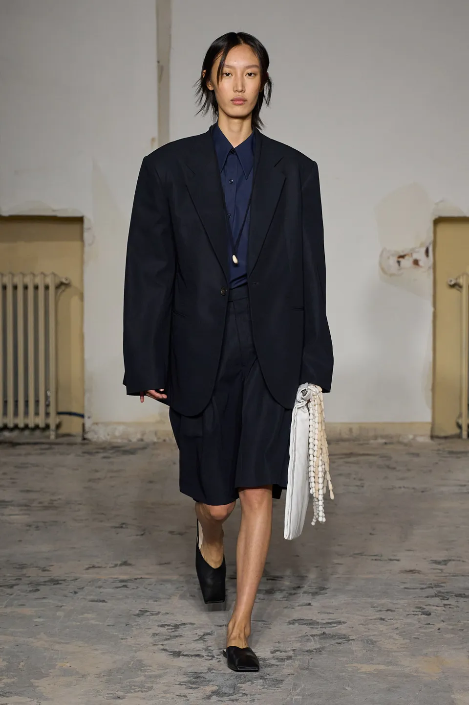
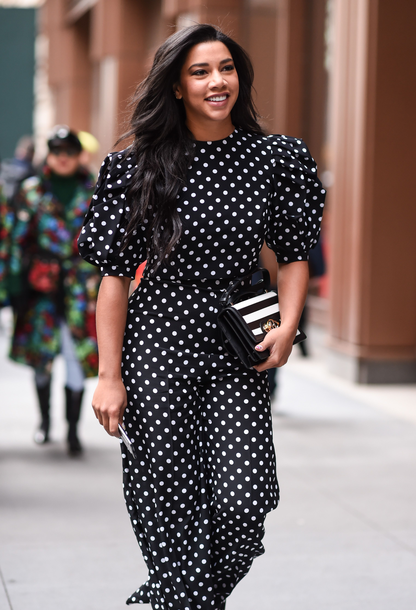
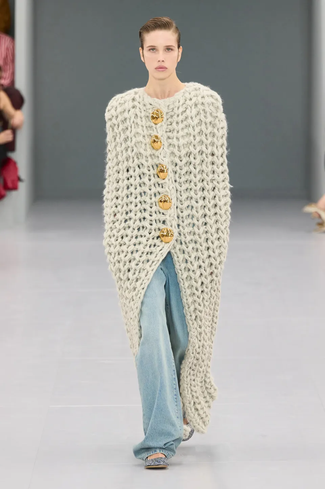

The 4 Trends French Girls Are Buying Into This Spring
By Alexandre Marain
BERMUDA SHORTS
Good news if the pantless trend strikes fear into your heart:
Bermuda shorts will be big this spring.
The masculine effect of knee-length shorts is chic and ever so slightly unconventional.
Take your pick from tailored, denim, cotton or leather versions.

POLKA DOTS
Time for leopard to slink back off into the jungle:
the 1950s-inspired polka-dot print is about to make its presence felt in a big way.
Polka dots were all over the spring 2024 runways,
adorning everything from minidresses to shoes to tights.

BALLET FLATS
Following a revival fueled by It-girls including Hailey Bieber,
ballet flats are going nowhere for spring 2024.
Expect to see French girls wearing their embellished versions all summer.

RUGBY SHIRTS
Perhaps we have the general hysteria surrounding Jacob Elordi’s
performance in Saltburn to thank for this one?
The striped rugby shirt popped up on the SS24 runways in Paris,
and French girls have well and truly taken note.